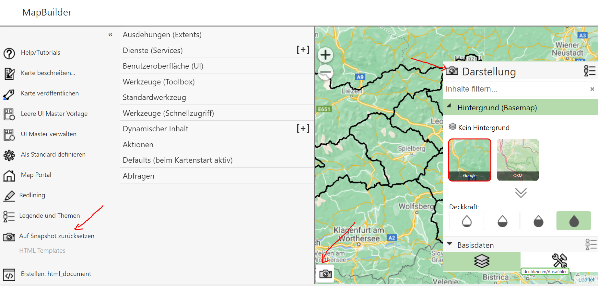
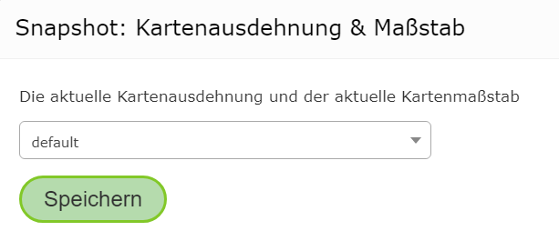
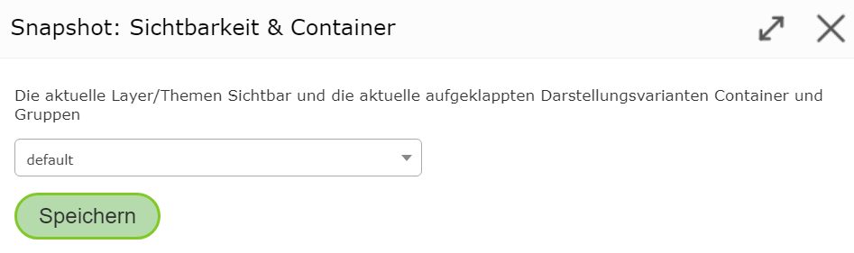
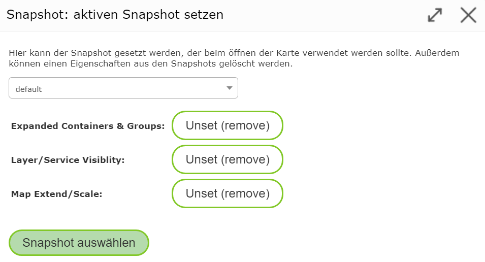
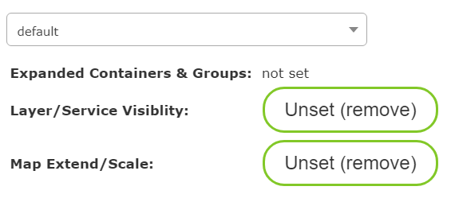

Snapshots¶
In the MapBuilder, you can zoom within the preview map or change the current layer/topic visibility. When a map is published, these settings are adopted. When a user opens a published map, the map is shown with the last settings.
For this reason, you must always switch back to the desired settings before publishing. Since it can often be necessary to change the view in the MapBuilder while creating maps (e.g. to test the map services), restoring the starting settings for the map can be quite time-consuming.
To simplify this process, snapshots can be used. Snapshots store certain properties of the map. When the map is opened, the stored snapshot properties are loaded, instead of the properties shown at the time of publishing.
The following properties can be stored within a snapshot:
Map extent and scale
Current topic/layer visibility
The containers and groups expanded in the presentation-variants TOC (this property can even be stored exclusively via a snapshot)
The management of snapshots for a map can be found in the MapBuilder in different places:

Map Extent and Scale¶
In the bottom left corner of the map there is a snapshot icon. Clicking on it opens the following dialog:

A snapshot can be selected here.
Note
Generally, you should always use default. Alternative snapshots only make sense if,
for testing purposes, you need to jump back and forth between different views.
Clicking Save adopts the current map scale and extent into the snapshot.
Topic/Layer Visibility and Containers¶
If you use the presentation-variants TOC, there is also a snapshot icon in the Presentation heading. Clicking it
opens the following dialog:

Again, default should be selected here. This stores the current visibility of the topics/layers.
It also stores which groups and containers are expanded in the presentation-variants TOC.
Note
When a user opens a map, by default the first presentation-variants container (usually background) is always shown expanded. If you want a different container to be shown expanded on start, this is done via snapshots, as shown here.
Managing Snapshots¶
There is also a snapshot icon in the sidebar with the text Reset to Snapshot. Clicking this
button opens the following dialog:

Here, the individual snapshots can be managed. It also shows which properties are stored in the snapshot.
If, for example, you don’t want the expanded topic groups to be stored, they can be
removed with the Unset (remove) button. The display of the properties then changes, for example, to:

Clicking the Select Snapshot button applies the properties to the current map preview.
The snapshot selected here is also used later in the published map.
Note
If you don’t want to use a snapshot for a map, remove all properties in this dialog with Unset (remove).